Evaluate each root exactly.
Solve each basic equation.
Explain why the first equation may have a different number of real solutions than the second.
Use the graph of $y=x^2$ and the line $y=9$.
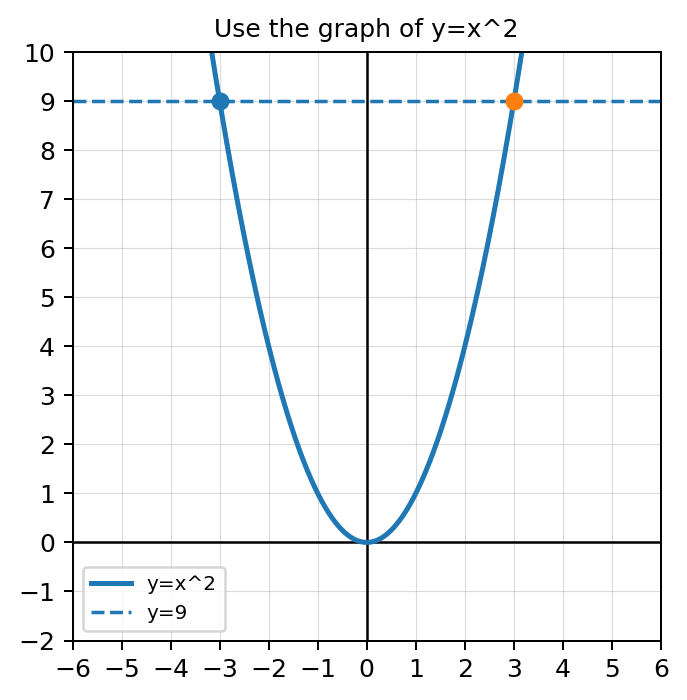
Complete each inverse operation.
Solve and verify both solutions.
$3(x-4)^2=75$
Solve using cube roots.
$2(x+1)^3-5=49$
Spiral Review: Let $f(x)=x^2-4x$ and $g(x)=2x+1$.
Formative Spiral: Use interval notation and inequality notation to describe all real numbers greater than or equal to $-2$ and less than $7$.
Use the graph to compare the number of solutions.
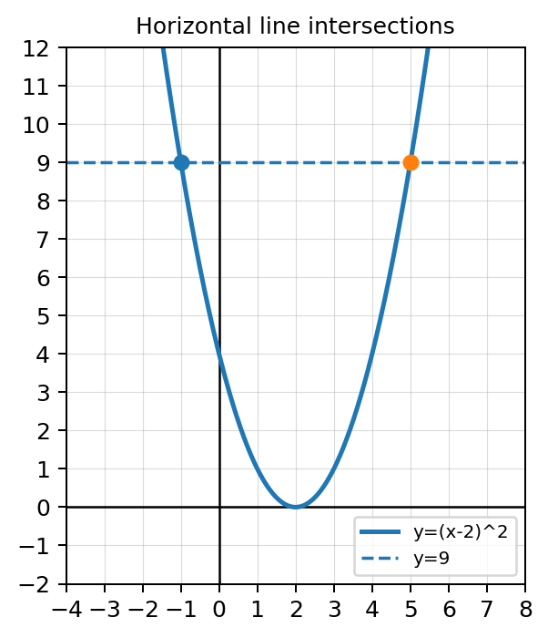
A student solves $(x+3)^2=49$ and writes $x+3=7$, so $x=4$.
Spiral Review: A function has graph symmetry about the origin and passes through $(2,5)$.
Formative Spiral: A graph has domain $[-3,\infty)$ and range $(-\infty,4]$.
Isolate the radical expression in each equation, but do not solve completely.
Use the graph to estimate the solution to $\sqrt{x}=x-2$.
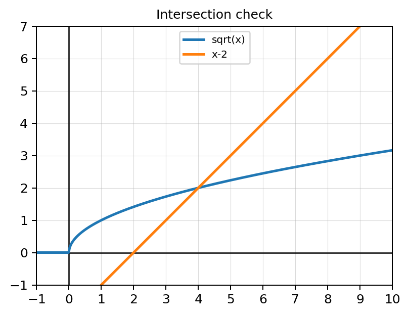
Solve each equation mentally.
Check whether each value is a solution to $\sqrt{x+8}=x$.
Solve and check.
$\sqrt{2x+7}=5$
Solve and identify any extraneous solution.
$\sqrt{x+4}=x-2$
Use the graph to support your conclusion.
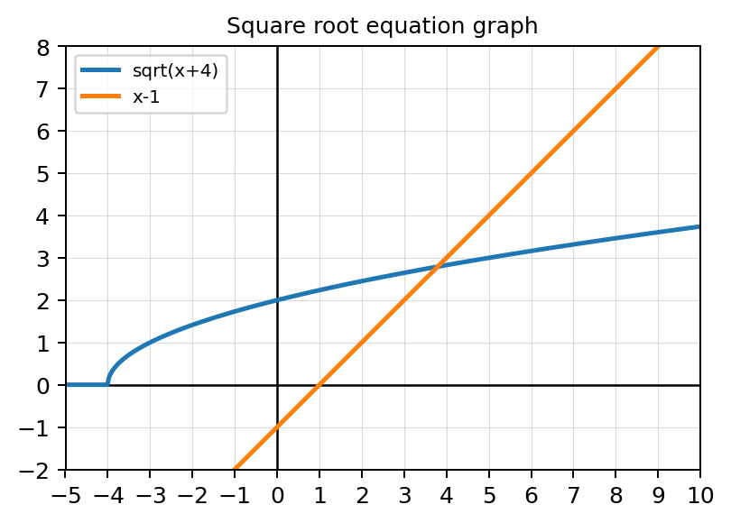
Spiral Review: Find the inverse of $f(x)=3x-8$, then verify one direction using composition.
Formative Spiral: Let $h(x)=x^2-6x+5$.
Solve $\sqrt{x+6}=x$.
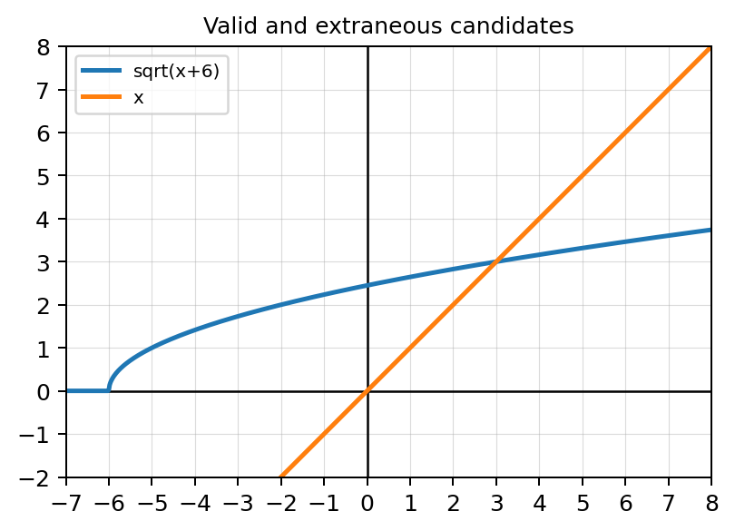
A student says, “Once I square both sides correctly, every answer from the quadratic works.”
Spiral Review: Calculate the average rate of change of $f(x)=x^2+1$ from $x=1$ to $x=4$, then interpret it as a secant slope.
Formative Spiral: A student writes $(2,7)$ on $f$ as $(2,7)$ on $f^{-1}$.
Evaluate each cube root exactly.
Solve each basic cube equation.
Use the cube root parent graph.
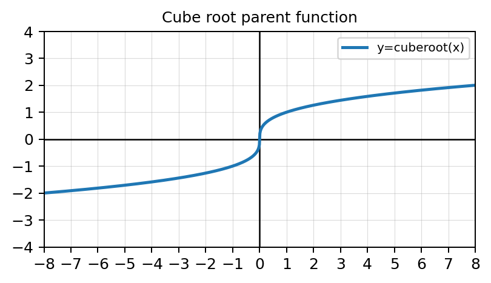
Simplify each expression before solving.
Solve and verify.
$\sqrt[3]{x-1}+2=4$
Solve using inverse operations.
$5\sqrt[3]{2x+6}-3=17$
Spiral Review: Determine whether $f(x)=x^3-4x$ is odd, even, or neither. Justify using $f(-x)$.
Formative Spiral: Translate $(-4,9]$ into inequality notation and explain the endpoint symbols.
The graph shows $f(x)=\sqrt[3]{x+3}-1$.
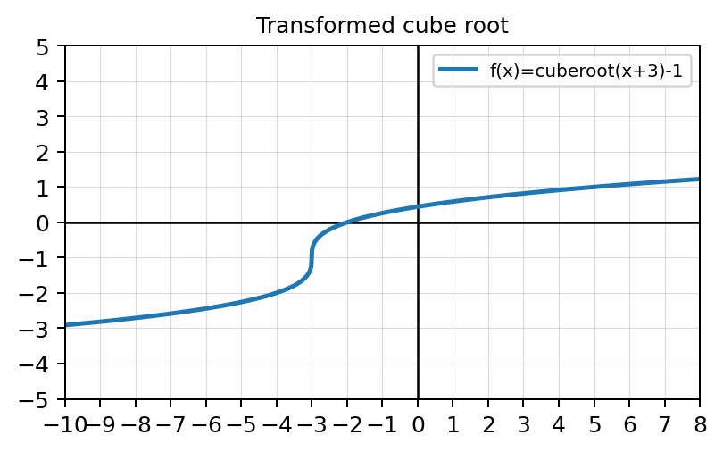
Compare solving $(x-2)^2=16$ and $(x-2)^3=64$.
Spiral Review: A quotient of functions simplifies from $\dfrac{x^2-16}{x-4}$ to $x+4$.
Formative Spiral: Create a factorable quadratic with zeros at $x=-2$ and $x=5$, then verify both zeros.
Complete the table for $f(x)=\sqrt{x}$.
| $x$ | 0 | 1 | 4 | 9 |
|---|---|---|---|---|
| $f(x)$ |
Use the graph to compare $y=\sqrt{x}$ and $y=\sqrt[3]{x}$.
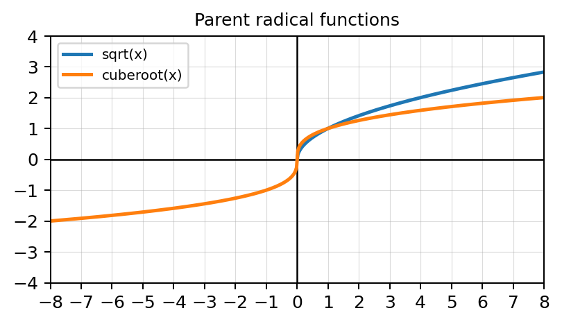
For each function, describe the transformation from the parent function.
Determine the domain of each function.
Use the graph of $f(x)=\sqrt{x-2}+1$.
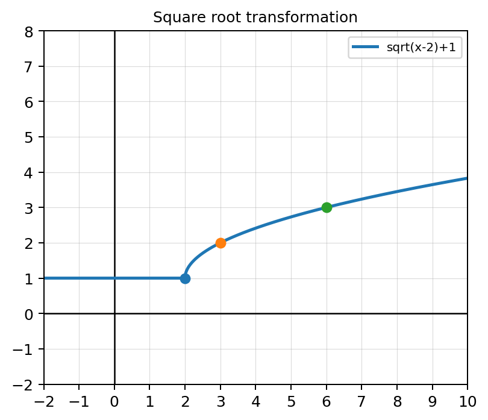
For $g(x)=-\sqrt{x+4}+3$:
Spiral Review: Let $f(x)=x+1$ and $g(x)=x^2-2$.
Formative Spiral: Determine the domain and range of a graph with a closed endpoint at $(-2,5)$ that increases forever to the right.
Compare the two radical graphs.
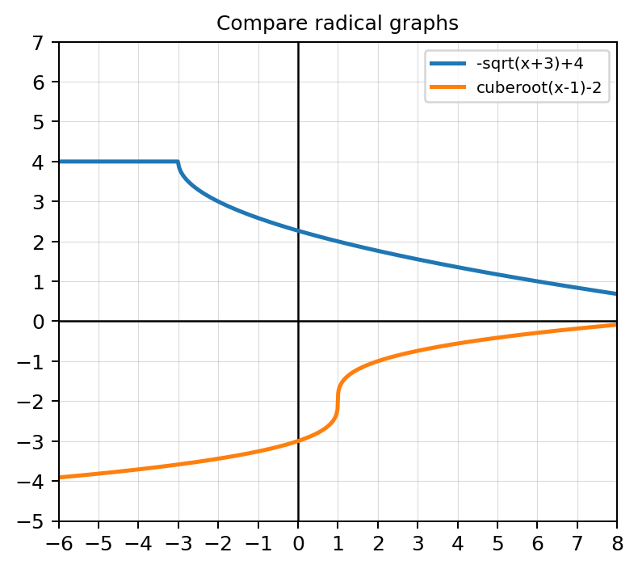
Create a square root function with domain $[4,\infty)$ and range $(-\infty,2]$.
Spiral Review: A function is one-to-one and contains the points $(-1,3)$, $(0,5)$, and $(4,9)$.
Formative Spiral: A graph has a jump at $x=1$. The left-hand limit is $4$ and the right-hand limit is $-2$.
Rewrite each expression in radical form.
Rewrite each radical using rational exponents.
Use the graph to compare $x^{1/2}$ and $x^{1/3}$.
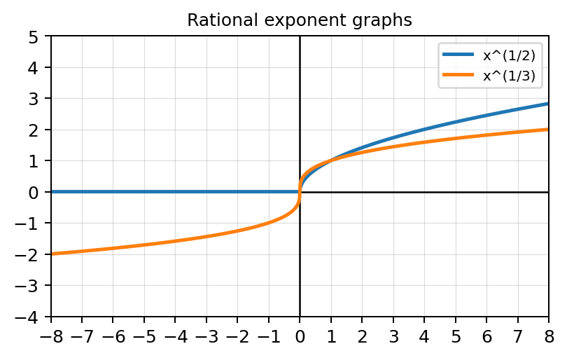
Evaluate exactly.
Analyze $f(x)=(x-1)^{2/3}$ using the graph.
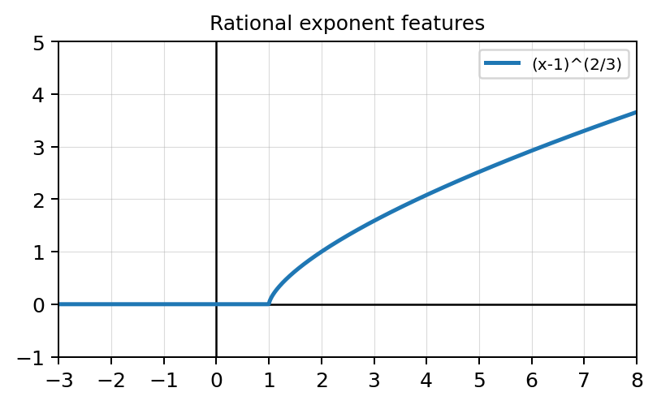
Rewrite and evaluate.
Spiral Review: Calculate and simplify the difference quotient for $f(x)=3x-7$.
Formative Spiral: Use $a*f(x-h)+k$ language to describe the transformation from $f(x)$ to $g(x)=-2f(x+3)-5$.
The graphs show two rational-exponent functions with the same inside expression.
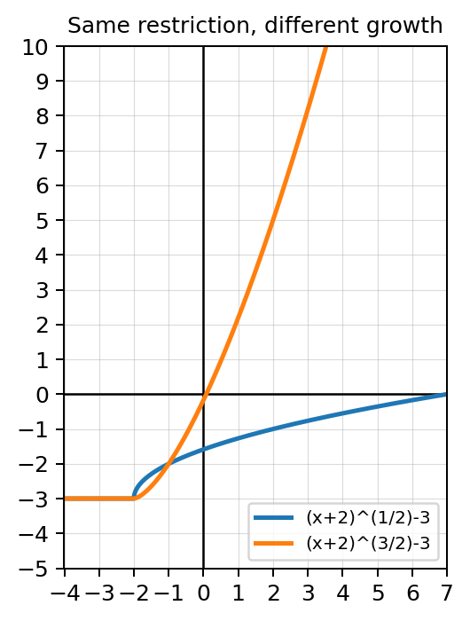
A student says $x^{2/3}$ and $x^{3/2}$ are basically the same because both use $2$ and $3$.
Spiral Review: Create two functions $f$ and $g$ so that $f(g(x))$ has a domain restriction even though $g(x)$ alone is defined for all real numbers. Explain your design.
Formative Spiral: Design a graph description with domain $[-1,6)$, range $[0,\infty)$, and a hole at $x=6$. Explain how each feature would appear visually.